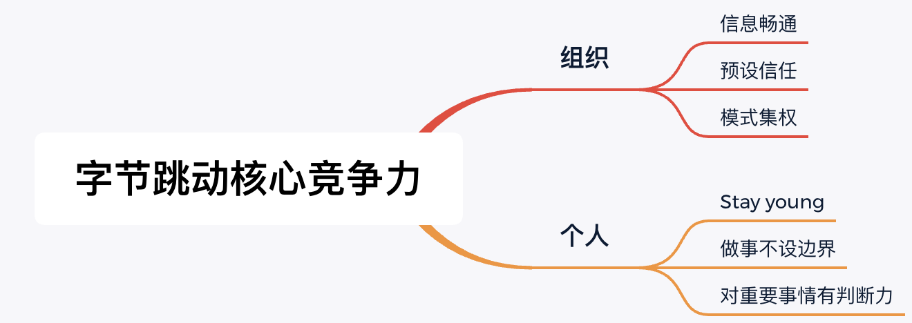

2012年创建的字节跳动，短短几年时间发展到估值接近千亿美元的互联网大鳄，拥有今日头条、抖音、西瓜视频等多个爆品app，除了搭上了移动互联网的春风，其企业自身的核心竞争力也得到了极大的体现。因此，对其核心竞争力进行一定的分析，抓住对自身团队有益的核心逻辑，予以学习和实践就变得很有价值了。文本首先从组织的角度分析字节跳动公司核心竞争力的来源，之后结合自身团队总结出适合落地的方法论，最后从个体的角度阐释一下具有竞争力的特质。作者才疏学浅，望读者大大不吝赐教。

“Develop a company as a product，技术并不总能保证产品（公司的竞争力），但是好团队可以“。
张一鸣大佬的说法非常精准，个人之前也思考过企业核心竞争力的问题，曾认为是产品或者是技术系统。但实际上，由于互联网产品和技术方案的开源化、社区化，在产品和技术角度很难形成垄断，企业护城河并没有想象中的牢固。进入21世纪，大家都认同“人才是最重要的资源”，因此打造一个能培养人才、发挥人才才能的舞台就成为企业的核心要务。
”在我看来，创业其实同时在做两个产品，一个是为用户提供服务的产品，另外一个就是公司，而CEO是公司这个产品的产品经理。“--张一鸣
接下来，将详细介绍保证字节跳动公司核心竞争力的关键来源，分别是信息通畅、预设信任和模式集权。
字节跳动内部推崇”直入主题的提问、回答“，”不要包装结果，不要向上管理，投leader所好“，”鼓励群聊不要单聊“，”坦诚清晰“的等原则，其目的是追求信息的高效流通。从经济学的角度上来说，也称为将企业内部成本降到最低。与此同时，其倡导google的理念”ego小但格局大“，即别把自己看太重，多花心思在能力提升和业务拓展上，避免”ego creates blind spots“。
这部分以一个员工的匿名分享为切入点，其提及“工作涉及和合作时，通常可以遵守Full Control和Full Context两个原则中的一个。前者是给出明确上下文，让对方了解系统是如何work的，从而能够根据上下文自己分析具体问题；后者是给出明确的文档，尽可能的包含所有可能遇到的问题和其解决方案。”采用后者的模式，由于参与者只了解自身的板块，因此需要花费大量的时间来沟通细节。采用前者的模式，需要参与者在前期花费一定时间去了解合作系统多方的context，不过这个花费通常是有价值的，之后这部分的对接效率就会高很多，而且相关参与者都会得到足够的成长。
对于Control和Context两种模式的选择，需要辩证的来看待，没有绝对的孰优孰劣。从项目管理的角度，当遇到关键且紧急的项目时，适用Control模式，统一思想集中资源，确保项目的及时落地；而长尾渐进的项目时，适用Context模式，提高参与者的信息获取，并提供一定思考自由度，让参与者有机会成为项目的owner。从公司级管理的角度，Control模式容易导致部门间难以合作，部分冗余，专业度和消息下降，违背Day1理念（每天都向创业公司一样运营）。
需要注意的是，这种管理模式是预设在”人性本善“的前提下的，那么如何保证公司员工的”人性本善“？主要通过两种手段，第一是招募合适的人，第二是坚持信任的价值观，对于违背以上2点的事宜一定要坚决摒弃。对于第一点，以字节跳动公司为例，其信奉的原则是：“找到合适的人“、"招一群学习能力强，事业开阔，心智成熟的成年人，一起打天下"。从文字的角度上看，这个要求非常高，在企业发展初期很难落地，但在高速发展期非常适用。对应企业初期，更需要的是招募经过大学教育的年轻人，需要创始人花费更多精力，将这些年轻人带上路，就像阿里提出的”好的团队是剩下来的，不是招募来的“一样。对于第二点，以阿里为例，其针对刷单购买月饼的员工进行了坚决的清除，这就是对”信任“价值观最有力的支撑。
个人集权，机构集权比较容易理解，那么模式集权如何理解呢？对ByteDancer来说，就是全公司自上而下的OKR制度，从CEO开始定制自己的目标，然后和直接汇报人一起review，之后逐层细化到各个执行人，虽然在执行的战术选择上会有不小的gap，但是在整体的目标上，是形成了足够的内部共识的。
字节跳动的核心的五大价值观是追求极致、务实敢为、开放谦逊、坦诚清晰和始终创业。
光说不练假把式，这部分学习的最终目标是引入部分适用于当前时期当前团队能力的方法论，增强整体团队能力。
核心目标
具体要求
成功人士的优秀特质有很多，这里以张一鸣大佬的分享为例，结合自身进行简要的介绍，愿和大家共勉。
参考资料
[1]陈思.张一鸣：创业6年，估值750亿美元！人才不是核心竞争力，机制才是！[EB/OL].https://mp.weixin.qq.com/s/03yDB6-gvSIL7e69CNfVpw,2019-12-19.
[2]扒胖子.张一鸣10年面试过2000人：混得好的年轻人都有这 5 种特质[EB/OL].https://mp.weixin.qq.com/s?__biz=MjM5OTAzMjc4MA==&mid=2650052208&idx=1&sn=5cb9750aaaca392dec02e2212947168c&mpshare=1&scene=25&srcid=0523vWjb3e9KcwSFSbte3tRo&key=3499a344dcab4594b3981aedb6dc5f675bc94cef5d4652725d5e09268236d581fdda6ed6c46d1981b8893ffe47d3ba5859b8724663c17ef3ae6d216d1cb642555a29f9e4a9d5a3e26c0e5b76f7c166e6&ascene=0&uin=MTUxNzM3MDY2MQ%3D%3D&devicetype=iMac+MacBookAir7%2C2+OSX+OSX+10.12.5+build(16F73)&version=12020510&nettype=WIFI&fontScale=100&pass_ticket=wlN4LDjzPmvPuRKFVlsVNfyIEPdoaJZVPeP3waciUi8lyUkLmS2IpgcBlQ%2B2J4g2#wechat_redirect,2016-08-17.